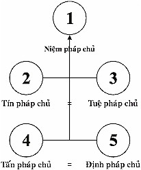

|
Tìm hiểu PHÁP HÀNH THIỀN TUỆ - Tỳ khưu HỘ PHÁP
PHẦN II PHÁP HÀNH (BHĀVANĀ) 10. NHỮNG PHÁP NÊN BIẾT (tiếp theo) 12- Pháp Hành Giới Ðịnh Tuệ Pháp hành Giới Ðịnh Tuệ là: Pháp hành Giới: là gìn giữ giới hạnh cho được trong sạch. Nghĩa là có tác ý thiện tâm gìn giữ thân tránh xa sự sát sanh, sự trộm cắp, sự tà dâm; và có tác ý thiện tâm gìn giữ khẩu tránh xa sự nói dối; nói lời chia rẽ; nói lời thô tục, chửi rủa, mắng nhiếc; nói lời vô ích, để làm nền tảng cho pháp hành thiền định. Pháp hành Ðịnh: là tiến hành thiền định, để chứng đắc các bậc thiền sắc giới và các bậc thiền vô sắc giới, để làm nền tảng cho pháp hành thiền tuệ. Pháp hành Tuệ: là tiến hành thiền tuệ, để chứng ngộ chân lý Tứ thánh đế chứng đắc 4 Thánh Ðạo, 4 Thánh Quả và Niết Bàn. 12.1- Pháp hành Giới Ðịnh Tuệ trong tam giới Trong tam giới: dục giới, sắc giới và vô sắc giới, pháp hành giới, pháp hành định, pháp hành tuệ thường phải hành theo tuần tự trước sau làm nền tảng cho nhau. 1- Pháp hành giới thuộc phần đầu, là pháp hành trước tiên, đó là tác ý thiện tâm gìn giữ thân và khẩu cho được trong sạch, không bị ô nhiễm bởi phiền não, để làm nền tảng cho pháp hành thiền định. 2- Pháp hành định thuộc phần giữa, đó là pháp hành thiền định, ở giai đoạn giữa (sau pháp hành giới), để làm nền tảng cho pháp hành tuệ. 3- Pháp hành tuệ thuộc phần cuối, là pháp hành thiền tuệ (sau pháp hành thiền định). Nhưng cũng có trường hợp đặc biệt, tiến hành thiền tuệ trước, tiến hành thiền định sau, sẽ trình bày ở sau. Ba pháp hành giới, định, tuệ thuộc trong tam giới này là pháp hành theo tuần tự trước sau, vì mỗi pháp hành đều có đối tượng riêng biệt, song có thể làm nhân duyên hỗ trợ lẫn nhau. Như trong Bộ Thanh Tịnh Ðạo dạy về bảy pháp thanh tịnh theo tuần tự như sau: 1- Giới thanh tịnh (sīlavisuddhi): thuộc về pháp hành giới thanh tịnh, đó là tác ý thiện tâm gìn giữ thân và khẩu cho được trong sạch, để làm nhân duyên phát sanh định thanh tịnh. 2- Ðịnh thanh tịnh (cittavisuddhi): thuộc về pháp hành thiền định thanh tịnh, là sự chứng đắc các bậc thiền sắc giới và các bậc thiền vô sắc giới, để làm nhân duyên phát sanh 5 loại tuệ thanh tịnh tuần tự tiếp theo. 3- Chánh kiến thiền tuệ thanh tịnh (diṭṭhivisuddhi) là thanh tịnh thứ nhất của pháp hành thiền tuệ. Ðó là trí tuệ thứ nhất gọi là Nāmarūpaparicchedañāṇa: Trí tuệ phân biệt thấy rõ biết rõ thực tánh của mỗi danh pháp, mỗi sắc pháp đều là pháp vô ngã, đúng theo chánh kiến thiền tuệ, nên diệt từng thời được tà kiến theo chấp ngã. 4- Thoát ly hoài nghi thanh tịnh (kaṅkhāvitaraṇavisuddhi), là thanh tịnh thứ nhì của pháp hành thiền tuệ, đó là trí tuệ thứ nhì gọi là Nāmarūpapaccayapariggahañāṇa: Trí tuệ thấy rõ biết rõ nhân duyên phát sanh mỗi danh pháp, mỗi sắc pháp, nên diệt được hoài nghi nơi tất cả mọi danh pháp, mọi sắc pháp. 5- Ðạo phi đạo tri kiến thanh tịnh (maggāmaggañāṇadassana-visuddhi) là thanh tịnh thứ 3 của pháp hành thiền tuệ, đó là trí tuệ thiền tuệ thứ 4 gọi là Udayabbayañāṇa: Trí tuệ thiền tuệ thấy rõ sự sanh, sự diệt của danh pháp sắc pháp ngay trong hiện tại, nên hiện thấy rõ trạng thái vô thường, trạng thái khổ, trạng thái vô ngã của danh pháp, sắc pháp; nên diệt được sự thấy sai chấp lầm nơi danh pháp sắc pháp cho là thường, lạc, ngã, tịnh. 6- Pháp hành tri kiến thanh tịnh (paṭipadāñāṇadassanivisuddhi) là thanh tịnh thứ 4 của pháp hành thiền tuệ, đó là gồm 9 loại trí tuệ thiền tuệ, từ trí tuệ thứ 4 không có phiền não của thiền tuệ cho đến trí tuệ thứ 12 có khả năng diệt được từng thời phiền não. 7- Tri kiến thanh tịnh (ñāṇadassanivisuddhi) là thanh tịnh thứ 5 của pháp hành thiền tuệ, đó là trí tuệ thiền tuệ siêu tam giới thứ 14 gọi là Maggañāṇa: Thánh Ðạo Tuệ, gồm có 4 Thánh Ðạo Tuệ: Nhập Lưu Thánh Ðạo Tuệ, Nhất Lai Thánh Ðạo Tuệ, Bất Lai Thánh Ðạo Tuệ, Arahán Thánh Ðạo Tuệ. Mỗi Thánh Ðạo Tuệ có khả năng đặc biệt diệt đoạn tuyệt được phiền não, tham ái, ác pháp tuỳ theo năng lực của mỗi Thánh Ðạo Tuệ, đến Arahán Thánh Ðạo Tuệ, thì diệt đoạn tuyệt được mọi phiền não, tham ái, ác pháp không còn dư sót nữa; cho nên tâm của bậc Thánh Arahán hoàn toàn trong sạch thanh tịnh. Bảy pháp thanh tịnh theo tuần tự trước sau:
12.2- Pháp hành Giới Ðịnh Tuệ trong siêu tam giới Thánh Ðạo hợp đủ 8 chánh: chánh kiến, chánh tư duy, chánh ngữ, chánh nghiệp, chánh tinh tấn, chánh niệm, chánh định chia ra 3 pháp hành như sau: thuộc về pháp hành Tuệ. 2- Chánh ngữ, chánh nghiệp, chánh mạng thuộc về pháp hành Giới. 3- Chánh tinh tấn, chánh niệm, chánh định thuộc về pháp hành Ðịnh. Bát chánh đạo đó là 8 tâm sở: trí tuệ tâm sở, hướng tâm tâm sở, chánh ngữ tâm sở, chánh nghiệp tâm sở, chánh mạng tâm sở, tinh tấn tâm sở, niệm tâm sở, định tâm sở, cùng với 28 tâm sở khác đồng sanh trong siêu tam giới tâm, đó là 4 hoặc 20 Thánh Ðạo Tâm và 4 hoặc 20 Thánh Quả Tâm có Niết Bàn làm đối tượng. Như vậy, trong Bát chánh đạo gồm có 3 pháp hành: pháp hành tuệ, pháp hành giới, pháp hành định cùng sanh trong 4 hoặc 20 Thánh Ðạo Tâm và 4 hoặc 20 Thánh Quả Tâm không trước không sau có Niết Bàn làm đối tượng. Trong Thánh Ðạo Tâm, Thánh Quả Tâm chánh kiến đóng vai trò chính yếu trong sự chứng ngộ chân lý Tứ thánh đế, chứng đắc Thánh Ðạo, Thánh Quả và Niết Bàn. Do đó, trong Bát chánh đạo sắp đặt chánh kiến lên hàng đầu làm nền tảng hỗ trợ cho chánh tư duy. Chánh tư duy làm nền tảng hỗ trợ cho chánh ngữ; và theo tuần tự cho đến cuối cùng là chánh định. Ðó là sự sắp đặt theo tính chất quan trọng của mỗi chánh, làm nhân duyên hỗ trợ tuần tự với nhau, không phải sắp đặt theo tuần tự pháp hành trước sau. Vì Bát chánh đạo đó là 8 tâm sở đồng sanh, đồng diệt, đồng đối tượng Niết Bàn, đồng nơi sanh với 4 Thánh Ðạo Tâm và 4 Thánh Quả Tâm, thuộc về siêu tam giới tâm, phần pháp thành (paṭivedha) đồng thời, không trước không sau. Ví dụ: Một thang thuốc chữa bệnh, gồm có 8 vị thuốc, trong đó có một vị thuốc chính để trị bệnh, 7 vị thuốc còn lại để phụ trợ. Khi đem 8 vị thuốc đó bỏ chung vào siêu thuốc, đổ thêm vào 3 chén nước, sắc thuốc cạn xuống còn 8 phân. Trong chén nước thuốc 8 phân này, vị thuốc chính cũng có thể nhận ra, tuy cùng hòa chung với 7 vị thuốc kia. Khi uống thuốc, uống một lần, không thể phân biệt được uống vị nào trước, vị nào sau, như thế nào, Bát chánh đạo đồng sanh với siêu tam giới tâm cũng như thế ấy. 12.3- Quả báu của mỗi pháp hành Giới, Ðịnh, Tuệ Pháp hành giới: Tác ý (cetanā) gìn giữ thân và khẩu được trong sạch, thuộc dục giới đại thiện nghiệp. Ngay trong kiếp hiện tại, hưởng được quả báu thân, khẩu thanh tịnh, tâm an lạc. Sau khi chết sẽ, do dục giới thiện nghiệp cho quả được tái sanh làm người, hoặc làm chư thiên trong 6 cõi thiện dục giới, thọ hưởng sự an lạc trong cõi người, hoặc cõi trời dục giới ấy cho đến hết tuổi thọ. Quả báu cao hơn pháp hành giới là: Pháp hành định: Hành giả tiến hành thiền định, nếu hành giả chỉ đạt đến cận định (upacārasamādhi), thiện tâm còn thuộc về dục giới đại thiện nghiệp; ngay trong kiếp hiện tại, thân, tâm thường được an lạc đặc biệt. Sau khi chết, do dục giới thiện nghiệp cho quả sẽ được tái sanh làm chư thiên trong 6 cõi thiện dục giới, thọ hưởng an lạc trong cõi trời ấy cho đến hết tuổi thọ. Nếu hành giả chứng đắc được bậc thiền sắc giới, hoặc bậc thiền vô sắc giới nào. Ngay kiếp hiện tại, thọ hưởng quả báu an lạc đặc biệt của bậc thiền ấy. Sau khi chết, do sắc giới thiện nghiệp hoặc vô sắc giới thiện nghiệp cho quả sẽ được tái sanh làm phạm thiên trong cõi trời sắc giới, hoặc cõi trời vô sắc giới tùy theo bậc thiền sở đắc của mình, thọ hưởng sự an lạc thiền định trong cõi trời sắc giới hay cõi trời vô sắc giới ấy, cho đến hết tuổi thọ. Quả báu cao hơn pháp hành định là: Pháp hành tuệ: Hành giả tiến hành thiền tuệ, nếu hành giả chưa chứng đắc được bậc Thánh Ðạo, bậc Thánh Quả nào, vẫn còn là phàm nhân, thiện tâm còn thuộc về dục giới đại thiện nghiệp; ngay trong kiếp hiện tại, có chánh kiến, có đức tin trong sạch nơi Tam bảo, tin nghiệp và quả của nghiệp, thân tâm thường được an lạc. Sau khi chết, do dục giới thiện nghiệp cho quả sẽ được tái sanh làm người có trí tuệ sáng suốt, hoặc làm chư thiên có trí tuệ trong cõi trời dục giới, thọ hưởng sự an lạc cho đến hết tuổi thọ trong cõi ấy. Nếu hành giả được chứng đắc Thánh Ðạo, Thánh Quả sẽ trở thành bậc Thánh nhân. Bậc Thánh nhân nào, đã diệt đoạn tuyệt được loại tham ái, phiền não nào rồi, loại tham ái, phiền não ấy vĩnh viễn không bao giờ phát sanh, không làm khổ tâm bậc Thánh nhân ấy nữa, ngay trong kiếp hiện tại lẫn kiếp vị lai. Bốn bậc Thánh nhân Bậc Thánh Nhập Lưu sau khi chết, chắc chắn giải thoát khỏi khổ tái sanh trong 4 ác giới (địa ngục, atula, ngạ quỷ, súc sanh), chỉ còn tái sanh cõi thiện dục giới (cõi người, và cõi trời dục giới) nhiều nhất 7 kiếp. Ðến kiếp thứ 7 chắc chắn sẽ chứng đắc Arahán Thánh Ðạo, Arahán Thánh Quả, trở thàmh bậc Thánh Arahán, rồi sẽ tịch diệt Niết Bàn, chấm dứt sự khổ tử sanh luân hồi trong tam giới. Bậc Thánh Nhất Lai sau khi chết, chỉ còn tái sanh một kiếp nữa trong cõi thiện dục giới. Trong kiếp ấy, chắc chắn sẽ chứng đắc Arahán Thánh Ðạo, Arahán Thánh Quả, trở thành bậc Thánh Arahán, rồi sẽ tịch diệt Niết Bàn, chấm dứt sự khổ tử sanh luân hồi trong tam giới. Bậc Thánh Bất Lai sau khi chết, không tái sanh trở lại cõi dục giới, chỉ còn tái sanh lên cõi trời sắc giới. Ở tại cõi trời ấy, chắc chắn sẽ chứng đắc Arahán Thánh Ðạo, Arahán Thánh Quả, trở thàmh bậc Thánh Arahán, rồi sẽ tịch diệt Niết Bàn, chấm dứt sự khổ tử sanh luân hồi trong tam giới. Bậc Thánh Arahán ngay kiếp hiện tại, khi tịch diệt Niết Bàn, chấm dứt sự khổ tử sanh luân hồi trong tam giới. Pháp hoàn hảo Giáo pháp của Ðức Phật sâu sắc, vi tế về ý nghĩa; chánh pháp hoàn toàn hoàn hảo suốt 3 phần.
Hay là:
Hay là:
13- Ba Phương Pháp Tiến Hành Ðể Chứng Ðắc 4 Thánh Ðạo, 4 Thánh Quả Trong bộ Paṭisambhidāmagga, phần Yuganaddhakathā dạy ba phương pháp tiến hành để chứng đắc 4 Thánh Ðạo, 4 Thánh Quả tóm lược như sau:
Phần Giải Thích 1- Tỳ khưu hành giả tiến hành thiền định trước, tiếp theo sau tiến hành thiền tuệ như thế nào? Trước tiên, hành giả tiến hành thiền định có đề mục thiền định làm đối tượng, đến khi chứng đắc bậc thiền nào rồi; hành giả xả bậc thiền ấy để làm nền tảng, sử dụng bậc thiền ấy làm đối tượng. Nếu sử dụng chi thiền lạc ấy, thì thuộc về phần niệm thọ là danh pháp. Nếu sử dụng thiền tâm ấy, thì thuộc về phần niệm tâm là danh pháp. Thiền tâm ấy phát sanh nương nhờ hadayavatthurūpa: sắc ý căn thuộc về sắc pháp. Tiếp theo sau, hành giả tiến hành thiền tuệ có danh pháp, sắc pháp của bậc thiền ấy (sở đắc của mình) làm đối tượng, trí tuệ thiền tuệ thấy rõ biết rõ sự sanh, sự diệt của danh pháp, sắc pháp ấy; thấy rõ biết rõ trạng thái vô thường, trạng thái khổ, trạng thái vô ngã của danh pháp, sắc pháp ấy; dẫn đến sự chứng ngộ chân lý Tứ thánh đế, chứng đắc 4 Thánh Ðạo – 4 Thánh Quả và Niết Bàn, diệt đoạn tuyệt các pháp ràng buộc (samyojana), các phiền não ngủ ngầm trong tâm (anusaya) tuần tự theo năng lực của mỗi Thánh Ðạo Tuệ. Như vậy gọi là hành giả tiến hành thiền định trước, tiếp theo sau tiến hành thiền tuệ. 4 bậc Thánh Ðạo Tuệ diệt phiền não: Bậc Nhập Lưu Thánh Ðạo Tuệ, diệt đoạn tuyệt được 3 pháp ràng buộc: ngũ uẩn tà kiến (sakkāyadiṭṭhi), hoài nghi (vicikicchā), pháp hành thường chấp thủ (sīlabbataparāmāsa); và 2 loại phiền não ngủ ngầm trong tâm: tà kiến ngủ ngầm (diṭṭhānusaya), hoài nghi ngủ ngầm (vicikicchānusaya). Bậc Nhất Lai Thánh Ðạo Tuệ, diệt đoạn tuyệt được 2 pháp ràng buộc: ái dục (kāmarāga), sân hận (paṭigha); và 2 loại phiền não: ái dục ngủ ngầm, sân hận ngủ ngầm đều là loại thô trong cõi dục giới. Bậc Bất Lai Thánh Ðạo Tuệ, diệt đoạn tuyệt được hai pháp ràng buộc: ái dục, sân hận; và 2 loại phiền não: ái dục ngủ ngầm, sân hận ngủ ngầm đều là loại vi tế trong cõi dục giới không còn dư sót. Bậc Arahán Thánh Ðạo Tuệ, diệt đoạn tuyệt được tất cả mọi pháp ràng buộc còn lại là: tham ái thiền sắc giới (rūparāga), tham ái thiền vô sắc giới (arūparāga), ngã mạn (māna), phóng tâm (uddhacca) và vô minh (avijjā) không còn dư sót. Và tất cả mọi phiền não ngủ ngầm trong tâm còn lại là: ngã mạn ngủ ngầm (mānānusaya), ái kiếp ngủ ngầm (bhavarāgānusaya), vô minh ngủ ngầm (avijjānusaya) và tất cả mọi phiền não, mọi ác pháp không còn dư sót. 2- Tỳ khưu hành giả tiến hành thiền tuệ trước, tiếp theo sau tiến hành thiền định như thế nào? Trước tiên, hành giả tiến hành thiền tuệ có danh pháp, sắc pháp làm đối tượng, trí tuệ thiền tuệ thấy rõ biết rõ sự sanh, sự diệt của danh pháp sắc pháp; thấy rõ biết rõ trạng thái vô thường, trạng thái khổ, trạng thái vô ngã của danh pháp sắc pháp; ngay khi ấy, sát na định (khaṇikasamādhi) định tâm từng thời, khoảnh khắc nơi danh pháp hoặc sắc pháp hiện tại ấy, có trạng thái vô thường, trạng thái khổ, trạng thái vô ngã, dẫn đến sự chứng ngộ chân lý Tứ thánh đế, chứng đắc 4 Thánh Ðạo – 4 Thánh Quả và Niết Bàn, diệt đoạn tuyệt các pháp ràng buộc (samyojana), các phiền não ngủ ngầm trong tâm (anusaya) tuần tự theo năng lực của mỗi Thánh Ðạo Tuệ. Ví dụ: Trường hợp hành giả tiến hành thiền tuệ, sử dụng đối tượng 4 oai nghi: dáng đi, tư thế đi gọi là sắc đi; dáng đứng, tư thế đứng gọi là sắc đứng; dáng ngồi, tư thế ngồi gọi là sắc ngồi; dáng nằm, tư thế nằm gọi là sắc nằm... thuộc về sắc pháp phát sanh từ tâm. Và thiện tâm hợp với trí, có chánh niệm, trí tuệ tỉnh giác, trực nhận trực giác dáng đi, tư thế đi gọi là sắc đi, v.v... thuộc về danh pháp. Mỗi khi chánh niệm trực nhận mỗi sắc pháp nào, mỗi danh pháp nào có sát na định (khaṇikasamādhi) định tâm từng thời, khoảnh khắc trong đối tượng hiện tại ấy, thuộc về thiền định. Hành giả tiến hành thiền tuệ có sắc pháp (của đối tượng 4 oai nghi) làm đối tượng, trí tuệ thiền tuệ thấy rõ biết rõ sự sanh, sự diệt của danh pháp, sắc pháp; thấy rõ biết rõ trạng thái vô thường, trạng thái khổ, trạng thái vô ngã của danh pháp, sắc pháp, dẫn đến sự chứng ngộ chân lý Tứ thánh đế, chứng đắc 4 Thánh Ðạo – 4 Thánh Quả và Niết Bàn, diệt đoạn tuyệt các pháp ràng buộc (samyojana), các phiền não ngủ ngầm trong tâm (anusaya) tuần tự theo năng lực của mỗi Thánh Ðạo Tuệ. Như vậy gọi là hành giả tiến hành thiền tuệ trước, tiếp theo sau tiến hành thiền định. 3- Tỳ khưu hành giả tiến hành thiền định và thiền tuệ cả hai đi đôi với nhau như thế nào? Tỳ khưu hành giả tiến hành thiền định và thiền tuệ cả hai đi đôi với nhau bằng nhiều cách:
Hành giả tiến hành thiền định và thiền tuệ cả hai đi đôi với nhau cùng chung đối tượng như thế nào? Trong trường hợp thiền định đó là các bậc thiền siêu tam giới có Niết Bàn làm đối tượng, diệt phóng tâm, và thiền tuệ đó là thiền tuệ siêu tam giới trong 4 Thánh Ðạo Tâm, 4 Thánh Quả Tâm có Niết Bàn làm đối tượng. Như vậy, gọi là tiến hành thiền định và thiền tuệ cả hai đi đôi với nhau cùng chung Niết Bàn làm đối tượng. Tương tự như trên, tiến hành thiền định và thiền tuệ cả hai đi đội với nhau cùng chung mục đích hướng đến Niết Bàn. v.v.... Trong ba phương pháp tiến hành để chứng đắc 4 Thánh Ðạo, 4 Thánh Quả và Niết Bàn này, còn tùy thuộc vào căn cơ duyên lành, trình độ trí tuệ thích hợp của mỗi chúng sinh. Có số hành giả trước tiên cần phải tiến hành thiền định làm nền tảng, tiếp theo là tiến hành thiền tuệ, dẫn đến chứng đắc 4 Thánh Ðạo, 4 Thánh Quả và Niết Bàn. Những bậc Thánh nhân này, thường có lục thông (abhiññā). Có số hành giả trước tiên cần phải tiến hành thiền tuệ, dẫn đến sự chứng đắc 4 Thánh Ðạo, 4 Thánh Quả và Niết Bàn, cùng với đệ nhất thiền siêu tam giới theo Thánh Ðạo Tâm và Thánh Quả Tâm. Những bậc Thánh nhân này, thường không có lục thông. Nhưng cũng có trường hợp đặc biệt, do nhờ tiền kiếp đã từng chứng đắc các bậc thiền và thần thông; kiếp hiện tại dầu không có thiền định làm nền tảng, khi chứng đắc Thánh Ðạo thì thiền định cùng thần thông phát sanh. Như trường hợp Ngài Ðại Ðức Arahán Cūḷapanthaka.... Có số hành giả tiến hành thiền định và thiền tuệ cả hai đi đôi với nhau, dẫn đến sự chứng đắc 4 Thánh Ðạo, 4 Thánh Quả và Niết Bàn. Những bậc Thánh nhân này, thường có lục thông. Cho nên pháp hành thiền định và pháp hành thiền tuệ luôn luôn hỗ trợ lẫn nhau. Tùy theo mỗi trường hợp, tùy theo căn duyên của mỗi hành giả. 14- Niết Bàn Ở Ðâu? Niết Bàn ở đâu là một vấn đề mà hạng phàm nhân thường hay quan tâm tìm hiểu, nhưng không thể nào thấy được, hiểu được, biết được, bởi vì Niết Bàn là pháp bên ngoài (bahiddhā dhammā), là pháp vô vi (asaṅkhatadhamma) không bị cấu tạo do nghiệp, tâm, thời tiết, vật thực. Niết Bàn thuộc về pháp siêu tam giới, nên không phải là đối tượng của dục giới tâm, sắc giới tâm, vô sắc giới tâm, mà chỉ là đối tượng của siêu tam giới tâm đó là 4 Thánh Ðạo Tâm, 4 Thánh Quả Tâm, là tâm của các bậc Thánh nhân mà thôi. Cho nên các hạng phàm nhân không thể biết được Niết Bàn. Niết Bàn là pháp của diệt Khổ thánh đế (dukkhanirodha ariyasacca: là sự thật chân lý mà chư bậc Thánh nhân chứng ngộ) đó là pháp diệt đoạn tuyệt được tâm tham ái là nhân sanh Khổ thánh đế. Như vậy, tham ái sanh nơi nào? Trong bài kinh Ðại Tứ niệm xứ [9] (Mahāsatipaṭṭhānasutta), Ðức Phật thuyết giảng phần "Nhân sanh Khổ thánh đế" như sau: "Katamañca bhikkhave dukkhasamudayaṃ ariyasaccaṃ? Yāyaṃ taṇhā ponabhavikā nandīrāgasahagatā tatratatrābhinandinī, seyyathidaṃ: Kāmataṇhā, bhavataṇhā, vibhavataṇhā. Sā kho panesā bhikkhave taṇhā kattha uppajjamānā uppajjati, kattha vinisamānā vīnisati? Yaṃ loke piyarūpaṃ sātarūpaṃ, etthāsā taṇhā uppajjamānā uppajjati, ettha nivisamānā nivisati? Kiñca loke piyarūpaṃ sātarūpaṃ? Cakkhu loke piyarūpaṃ sātarūpaṃ, etthāsā taṇhā uppajjamānā uppajjati, ettha nivisamānā nivisati...". "Này chư Tỳ khưu, thế nào gọi là Nhân sanh Khổ thánh đế? Tham ái dắt dẫn tái sanh kiếp sau, hợp với tham muốn và thỏa thích, có trạng thái thường say đắm, hoan lạc trong kiếp sống và các đối tượng. Nhân sanh Khổ thánh đế ấy là: Kāmataṇhā: Dục ái: Tham ái trong 6 cảnh trần: sắc, thanh, hương, vị, xúc và pháp trần. Bhavataṇhā: Hữu ái: Tham ái trong 6 cảnh trần hợp với thường kiến; hoặc tham ái trong thiền sắc giới, thiền vô sắc giới, cõi trời sắc giới, cõi trời vô sắc giới. Vibhavataṇhā: Phi hữu ái: Tham ái trong 6 cảnh trần hợp với đoạn kiến. – Này chư Tỳ khưu, ba loại tham ái này, khi phát sanh, thì phát sanh ở đâu? Khi dính mắc, thì dính mắc ở đâu? Pháp nào có trạng thái đáng ưa thích, có trạng thái đáng hài lòng, ba loại tham ái ấy, khi phát sanh, thì phát sanh do nương nhờ nơi pháp có trạng thái đáng ưa thích, đáng hài lòng ấy; khi dính mắc, thì dính mắc nơi pháp có trạng thái đáng ưa thích, đáng hài lòng ấy. Pháp nào có trạng thái đáng ưa thích, có trạng thái đáng hài lòng ở trong đời? 1- Nhãn (mắt) có trạng thái đáng ưa thích, có trạng thái đáng hài lòng trong đời. Ba tham ái ấy, khi phát sanh thì phát sanh do nương nhờ nơi nhãn (mắt) có trạng thái đáng ưa thích, đáng hài lòng ấy; khi dính mắc thì dính mắc nơi nhãn (mắt) có trạng thái đáng ưa thích, đáng hài lòng ấy. Cũng tương tự như vậy, nhĩ (tai), tỷ (mũi), thiệt (lưỡi), thân và ý là 6 căn bên trong tiếp xúc với 6 cãnh trần bên ngoài. 2- Sáu đối tượng (ārammaṇa): sắc trần, thanh trần, hương trần, vị trần, xúc trần và pháp trần bên ngoài tiếp xúc với 6 căn bên trong. 3- Sáu thức tâm (viññāṇa): nhãn thức tâm, nhĩ thức tâm, tỷ thức tâm, thiệt thức tâm, thân thức tâm và ý thức tâm phát sanh do 6 trần bên ngoài tiếp xúc với 6 căn bên trong. 4- Sáu xúc (phassa): nhãn xúc, nhĩ xúc, tỷ xúc, thiệt xúc, thân xúc và ý xúc phát sanh trong 6 thức tâm. 5- Sáu thọ (vedanā): nhãn thọ, nhĩ thọ, tỷ thọ, thiệt thọ, thân thọ và ý thọ phát sanh trong 6 thức tâm. 6- Sáu tưởng (saññā): sắc tưởng, thanh tưởng, hương tưởng, vị tưởng, xúc tưởng và pháp tưởng phát sanh trong 6 thức tâm. 7- Sáu tác ý (cetanā): sắc tác ý, thanh tác ý, hương tác ý, vị tác ý, xúc tác ý và pháp tác ý phát sanh trong 6 thức tâm. 8- Sáu ái (taṇhā): sắc ái, thanh ái, hương ái, vị ái, xúc ái và pháp ái phát sanh do nương nhờ 6 đối tượng. 9- Sáu hướng tâm (vitakka): hướng tâm đến sắc, hướng tâm đến thanh, hướng tâm đến hương, hướng tâm đến vị, hướng tâm đến xúc và hướng tâm đến pháp phát sanh do nương nhờ 6 đối tượng. 10- Sáu quan sát (vicāra): quan sát sắc, quan sát thanh, quan sát hương, quan sát vị, quan sát xúc và quan sát pháp phát sanh do nương nhờ 6 đối tượng. Gồm có 60 pháp có trạng thái đáng ưa thích, đáng hài lòng, ba tham ái ấy, khi phát sanh thì phát sanh do nương nhờ ở 60 pháp có trạng thái đáng ưa thích, đáng hài lòng ấy; khi dính mắc thì dính mắc ở 60 pháp có trạng thái đáng ưa thích, đáng hài lòng ấy. Tham ái, nhân sanh khổ, phát sanh do nương nhờ ở pháp nào có trạng thái đáng ưa thích, đáng hài lòng, dính mắc ở pháp nào có trạng thái đáng ưa thích, đáng hài lòng, thì sự khổ phát sanh do nương nhờ ở pháp có trạng thái đáng ưa thích, đáng hài lòng ấy, sự tái sanh kiếp sau, sự luân hồi tiếp tục kéo dài sanh tử – tử sanh vô cùng vô tận. Ðó gọi là tham ái, Nhân sanh Khổ thánh đế, mà bậc Thánh nhân đã chứng ngộ, đã diệt đoạn tuyệt được tham ái bằng Thánh Ðạo Tuệ". Cũng trong bài kinh này, Ðức Phật thuyết giảng phần "Diệt Khổ thánh đế" như sau: "Katamañca bhikkhave dukkhanirodhaṃ ariyasaccaṃ? Yo tassāyeva taṇhāya asesavirāga nirodho cāgo paṭinissaggo mutti anālayo. Sā kho panesā bhikkhave, taṇhā kattha pahīyamānā pahīyati, kattha nirujjhamānā nirujjhati? Yaṃ loke piyarūpaṃ sātarūpaṃ, etthāsā taṇhā pahīyamānā pahīyati, ettha nirujjhamānā nirujjhati? Kiñca loke piyarūpaṃ sātarūpaṃ? Cakkhu loke piyarūpaṃ sātarūpaṃ, etthāsā taṇhā pahīyamānā pahīyati, ettha nirujjhamānā nirujjhati...". – Này chư Tỳ khưu, thế nào gọi là Diệt Khổ thánh đế? Niết Bàn pháp diệt đoạn tuyệt tham ái nhân sanh khổ không còn dư sót bằng Thánh Ðạo Tuệ, pháp xả ly ngũ uẩn, pháp từ bỏ ngũ uẩn, pháp giải thoát khổ, pháp không còn luyến ái dính mắc nữa. – Này chư Tỳ khưu, ba loại tham ái ấy, khi bị hoại, thì bị hoại ở đâu? Khi bị diệt, thì bị diệt ở đâu? Pháp nào có trạng thái đáng ưa thích, có trạng thái đáng hài lòng, ba loại tham ái ấy, khi bị hoại, thì bị hoại nơi pháp có trạng thái đáng ưa thích, đáng hài lòng ấy; khi bị diệt, thì bị diệt nơi pháp có trạng thái đáng ưa thích, đáng hài lòng ấy. Pháp nào có trạng thái đáng ưa thích, có trạng thái đáng hài lòng ở trong đời? 1- Nhãn (mắt) có trạng thái đáng ưa thích, có trạng thái đáng hài lòng trong đời. Ba tham ái ấy, khi bị hoại, thì bị hoại nơi nhãn (mắt) có trạng thái đáng ưa thích, đáng hài lòng ấy; khi bị diệt, thì bị diệt nơi nhãn (mắt) có trạng thái đáng ưa thích, đáng hài lòng ấy. Cũng tương tự như vậy đối với nhĩ (tai), tỷ (mũi), thiệt (lưỡi), thân và ý. 2- Sáu đối tượng (ārammaṇa).... 3- Sáu thức tâm (viññāṇa).... 4- Sáu xúc (phassa).... 5- Sáu thọ (vedanā).... 6- Sáu tưởng (saññā).... 7- Sáu tác ý (cetanā).... 8- Sáu ái (taṇhā).... 9- Sáu hướng tâm (vitakka).... 10- Sáu quan sát (vicāra).... Gồm có 60 pháp có trạng thái đáng ưa thích, đáng hài lòng trong đời, ba tham ái ấy, khi bị hoại, thì bị hoại nơi 60 pháp có trạng thái đáng ưa thích, đáng hài lòng ấy; khi bị diệt, thì bị diệt nơi 60 pháp có trạng thái đáng ưa thích, đáng hài lòng ấy. Ðó gọi là Niết Bàn, pháp Diệt Khổ thánh đế, mà bậc Thánh nhân đã chứng ngộ bằng 4 Thánh Ðạo Tuệ, 4 Thánh Quả Tuệ". Tóm lại, tham ái, nhân sanh Khổ thánh đế phát sanh do nương nhờ vào 60 chi pháp cho quả Khổ thánh đế ở kiếp hiện tại và dắt dẫn tái sanh kiếp sau, kéo dài sự khổ tử sanh luân hồi trong tam giới. Và tham ái, nhân sanh Khổ thánh đế, bị diệt đoạn tuyệt nơi chi pháp nào, trong 60 chi pháp ấy, bằng 4 Thánh Ðạo Tuệ, thì gọi là phiền não Niết Bàn cũng chính tại nơi chi pháp ấy. Loại tham ái, phiền não nào đã bị diệt đoạn tuyệt bằng Thánh Ðạo Tuệ nào, loại tham ái, phiền não ấy Niết Bàn, nghĩa là loại phiền não, tham ái ấy vĩnh viễn không còn sanh nữa. Tất cả các pháp hữu vi có sanh, có diệt là thường. Cho nên, phiền não sanh, rồi diệt đó là trạng thái tự nhiên của pháp hữu vi. Song đặc biệt nhất là Thánh Ðạo Tuệ diệt đoạn tuyệt phiền não loại nào rồi, phiền não loại ấy vĩnh viễn không còn sanh nữa, gọi là Phiền Não Niết Bàn. Niết Bàn Hiện Hữu Hành giả nào tiến hành thiền tuệ đúng theo Pháp hành Trung đạo, dẫn đến sự chứng ngộ Niết Bàn, thì Niết Bàn hiện hữu đối với họ; còn hành giả nào tiến hành thiền tuệ không đúng theo Pháp hành Trung đạo, thì không dẫn đến sự chứng ngộ Niết Bàn, thì Niết Bàn không hiện hữu đối với họ. Trong bài kinh Gaṇakamoggallānasutta [10] Ðức Phật dạy: "Một thuở nọ, Ðức Thế Tôn ngự tại chùa Pubbārama, gần thành Sāvatthi. Khi ấy, có Bà la môn Gaṇakamoggallāna đến hầu Ðức Phật, nghe pháp từ Ðức Phật xong, vô cùng hoan hỉ, bèn bạch với Ðức Thế Tôn rằng: Kính bạch Ðức Gotama, các hàng đệ tử của Ðức Thế Tôn, được Ðức Thế Tôn chỉ dạy rõ ràng như vậy, tất cả đều chứng ngộ Niết Bàn hay có một số không chứng ngộ Niết Bàn? Bạch Ngài. Ðức Thế Tôn dạy rằng: Này Bà la môn, các hàng đệ tử của Như Lai, được Như Lai chỉ dạy rõ ràng như vậy, có một số ít chứng ngộ Niết Bàn, còn phần đông không chứng ngộ Niết Bàn. Kính bạch Ðức Thế Tôn, do nhân nào, do duyên nào? Một khi Niết Bàn vẫn hiện hữu, pháp hành dẫn đến Niết Bàn vẫn hiện hữu, Ðức Gotama, Bậc Tôn Sư chỉ dạy rõ ràng vẫn hiện hữu; nhưng tại sao các hàng đệ tử của Ðức Gotama một số ít chứng ngộ Niết Bàn, còn phần đông không chứng ngộ Niết Bàn, bạch Ngài? Ðức Thế Tôn dạy rằng: Này Bà la môn, nếu như vậy Như Lai hỏi con về chuyện này, con nghĩ như thế nào, thì trả lời như thế ấy. Này Bà la môn, con nghĩ sao về điều này? Con biết đường đến kinh thành Rājagaha có phải không? Kính bạch Ðức Gotama, con biết rõ đường đi đến kinh thành Rājagaha. Vậy, này Bà la môn, nếu mọi người nhờ con chỉ đường đến kinh thành Rājagaha, họ đều đến nơi kinh thành Rājagaha cả thảy, hay có một số nào đó không đến nơi. Kính bạch Ðức Gotama, có số người đến nơi, còn có số người khác thì không ! Này Bà la môn, do nhân nào, do duyên nào, một khi kinh thành Rājagaha vẫn hiện hữu, con đường đi đến kinh thành Rājagaha vẫn hiện hữu, con là người chỉ dẫn rõ ràng vẫn hiện hữu; nhưng tại sao có số người đến kinh thành Rājagaha, còn có số người thì không đến kinh thành Rājagaha? Kính bạch Ðức Gotama, về vấn đề này, con biết làm sao được, con chỉ là người chỉ đường mà thôi. Ðức Thế Tôn dạy rằng: Này Bà la môn, cũng như vậy đó, một khi Niết Bàn vẫn hiện hữu, pháp hành dẫn đến Niết Bàn vẫn hiện hữu, Như Lai chỉ dạy rõ ràng vẫn hiện hữu; nhưng mà các hàng đệ tử của Như Lai, một số ít chứng ngộ Niết Bàn, còn phần đông không chứng ngộ Niết Bàn. Như Lai cũng chẳng biết làm sao được, vì Như Lai chỉ là người chỉ đường (Maggakkhāyī) mà thôi!". Qua đoạn kinh trên, cho chúng ta hiểu rõ: không phải tất cả hành giả đều có thể chứng ngộ Niết Bàn. Có số ít hành giả chứng ngộ Niết Bàn nhờ tiến hành pháp hành Bát chánh đạo, đúng theo Pháp hành Trung đạo. Và nhờ có ba la mật nhiều đời nhiều kiếp trong quá khứ hỗ trợ, nên kiếp hiện tại này, hành giả mới có thể chứng ngộ chân lý Tứ thánh đế, chứng đắc 4 Thánh Ðạo, 4 Thánh Quả, và Niết Bàn; còn số đông hành giả tiến hành không đúng theo pháp hành Bát chánh đạo, không đúng theo Pháp hành Trung đạo; hoặc tiến hành đúng Pháp hành Trung đạo nhưng không đủ ba la mật hỗ trợ cho pháp hành Bát chánh đạo, để chứng ngộ Niết Bàn ngay trong kiếp hiện tại. 15- Pháp Hành Phạm Hạnh Trong kinh Brahmacariyasutta [11], Ðức Phật dạy rằng: "Này chư Tỳ khưu, Như Lai sẽ thuyết giảng pháp hành phạm hạnh và quả của pháp hành phạm hạnh cho các con, các con hãy lắng nghe: Này chư Tỳ khưu, pháp hành phạm hạnh là thế nào? Thánh Ðạo hợp đủ 8 chánh: chánh kiến, chánh tư duy, chánh ngữ, chánh nghiệp, chánh mạng, chánh tinh tấn, chánh niệm và chánh định. Bát chánh đạo này gọi là Pháp hành phạm hạnh. "Này chư Tỳ khưu, quaû của pháp hành phạm hạnh là thế nào? Nhập Lưu Thánh Quả, Nhất Lai Thánh Quả, Bất Lai Thánh Quả, Arahán Thánh Quả, 4 Thánh Quả này, gọi là quả của pháp hành phạm hạnh". Theo ý nghĩa bài kinh này, Pháp hành phạm hạnh là Thánh Ðạo hợp đủ 8 chánh: chánh kiến, chánh tư duy, chánh ngữ, chánh nghiệp... chánh định đồng sanh trong 4 Thánh Ðạo Tâm, là pháp hành dẫn đến sự chứng ngộ Niết Bàn diệt khổ thánh đế hoặc gọi tắt là "Ðạo thánh đế". Như vậy, Ðạo thánh đế đó là pháp hành Bát chánh đạo hợp đủ 8 chánh: chánh kiến, chánh tư duy, chánh ngữ... chánh định đồng sanh trong mỗi Thánh Ðạo Tâm, đã tiến hành xong, đã hoàn thành xong mọi phận sự Tứ thánh đế: Khổ thánh đế nên biết, thì đã biết;Tập thánh đế nên diệt, thì đã diệt;Diệt thánh đế nên chứng ngộ, thì đã chứng ngộ đồng thời cùng một lúc không trước không sau, liền cho quả Thánh Quả Tâm tương xứng với mỗi Thánh Ðạo Tâm, không có thời gian ngăn cách (akālika) như:
Ðó là Pháp hành phạm hạnh và quả của Pháp hành phạm hạnh. Ðể có được kết quả như vậy, hành giả hành phạm hạnh trong Phật giáo của Ðức Thế Tôn với mục đích gì? Như trong kinh Kimatthiyasuttā [12] Ðức Phật dạy rằng: "... Dukkhassa hi pariññatthaṃ mayi brahamacarīyaṃ vuccati..." "Này chư Tỳ khưu, đúng vậy, hành phạm hạnh nơi Như Lai, cốt để biết rõ, để chứng ngộ Khổ thánh đế". "Này chư Tỳ khưu, pháp hành phạm hạnh cốt để biết rõ, để chứng ngộ Khổ thánh đế, như thế nào? Thánh Ðạo hợp đủ 8 chánh: chánh kiến, chánh tư duy, chánh ngữ, chánh nghiệp, chánh mạng, chánh tinh tấn, chánh niệm và chánh định. Bát chánh đạo này là pháp hành phạm hạnh cốt để biết rõ, để chứng ngộ Khổ thánh đế". Sự bắt đầu của pháp hành Bát chánh đạo là hành chánh niệm: niệm thân, niệm thọ, niệm tâm, niệm pháp, gọi là tiến hành Tứ niệm xứ, hay niệm sắc pháp, niệm danh pháp, gọi là tiến hành thiền tuệ. Như vậy, tiến hành Tứ niệm xứ hay tiến hành thiền tuệ, cốt để biết rõ khổ đế của danh pháp, sắc pháp. Khi trí tuệ thiền tuệ thấy rõ, biết rõ danh pháp, sắc pháp là khổ đế, nên nhàm chán nơi danh pháp, sắc pháp; khi nhàm chán nơi danh pháp, sắc pháp, mới có thể diệt được tâm tham ái nơi danh pháp, sắc pháp. Tâm tham ái là nhân sanh khổ đế bị diệt đoạn tuyệt hoàn toàn bằng Arahán Thánh Ðạo Tuệ. bậc Thánh Arahán được giải thoát hoàn toàn khỏi khổ tâm, nhưng khi còn có sắc thân là quả của tham ái nên còn phải khổ thân. Bậc Thánh Arahán đến khi tịch diệt, Ngũ Uẩn Niết Bàn, giải thoát khỏi khổ thân, chấm dứt khổ tử sanh luân hồi trong tam giới. Giáo Pháp của Ðức Phật, mục đích chính chỉ dạy chúng sinh biết rõ khổ đế, và cuối cùng chỉ dạy Niết Bàn, pháp diệt Khổ thánh đế. Thật vậy, Ðức Phật đã từng khẳng định với Ðại Ðức Anurādha rằng: "...Pubbe cā’haṃ Anurādha etarahi ca dukkhañceva paññāpemi dukkhassa ca nirodhaṃ...". [13] "Này Anurādha, từ trước cho đến nay, Như Lai chỉ có thuyết dạy về Khổ thánh đế, và Niết Bàn, pháp diệt Khổ thánh đế". Ðó là lời giáo huấn của Ðức Phật tóm tắt về Tứ thánh đế là Khổ thánh đế và Diệt Khổ thánh đế. Trong Pháp Cú kệ, Ðức Phật thuyết dạy 3 bài kệ về 3 trạng thái chung: trạng thái vô thường, trạng thái khổ, trạng thái vô ngã, dẫn đến nhàm chán khổ đế trong ngũ uẩn, danh pháp, sắc pháp, chứng ngộ Niết Bàn, an lạc tuyệt đối, như sau: "Sabbe saṅkhārā [14] aniccā’ti, yadā paññāya passati, Atha nibbindati dukkhe, esa maggo visuddhiyā". (278) "Sabbe saṅkhārā dukkhā’ti, yadā paññāya
passati, (279) "Sabbe dhammā [15] anattā’ti, yadā paññāya
passati, (277) "Khi nào hành giả thấy bằng trí tuệ, (278) "Khi nào hành giả thấy bằng trí tuệ, (279) "Khi nào hành giả thấy bằng trí tuệ, Trí tuệ thiền tuệ thấy rõ, biết rõ danh pháp, sắc pháp sanh rồi diệt liên tục không ngừng, nên hiện thấy rõ trạng thái vô thường, trạng thái khổ, trạng thái vô ngã, trí tuệ thiền tuệ phát sanh thấy nhàm chán trong Khổ thánh đế, mới diệt được tâm tham ái nơi danh pháp, sắc pháp. Ðó là Thánh Ðạo thanh tịnh hợp đủ 8 chánh chứng ngộ Niết Bàn. Trong tam giới này chỉ có khổ đế, ngoài khổ đế ra không có gì khác, như Ðại Ðức Tỳ khưu ni Vajirā, bậc Thánh Arahán dạy rằng: [17] Thật vậy, chỉ có khổ đế sanh lên, Sự thật chân lý trong tam giới chỉ có "khổ đế" (dukkhasacca), còn sự an lạc chỉ là "hư ảo" (sukhavippallāsa), sự an lạc trong tam giới này không phải là sự thật, không phải là chân lý, vì phải chịu trạng thái vô thường biến đổi, nên chỉ có khổ mà thôi. Vậy "khổ đế" là sự thật chân lý. Mục đích tiến hành thiền tuệ bắt đầu chỉ để biết rõ sự thật chân lý khổ đế ấy và cuối cùng dẫn đến sự tịch diệt Niết Bàn, pháp diệt Khổ thánh đế ấy, chấm dứt khổ tái sanh trong ba giới bốn loài, khi ấy mới hoàn toàn giải thoát khổ. 16- 5 Pháp Chủ (Indriya) 5 pháp chủ là: tín pháp chủ, tấn pháp chủ, niệm pháp chủ, định pháp chủ và tuệ pháp chủ đóng vai trò trọng yếu trong việc tiến hành thiền định để chứng đắc các bậc thiền, hoặc tiến hành thiền tuệ để chứng ngộ chân lý Tứ thánh đế, chứng đắc 4 Thánh Ðạo, 4 Thánh Quả và Niết Bàn. Gọi là pháp chủ: nghĩa là có chủ quyền trong phận sự của mình. 1- Tín pháp chủ (saddhindriya): Ðức tin làm chủ quyền trong sự tin tưởng nơi ân đức Tam bảo, như__ Bậc Thánh Thanh Văn có đức tin trong sạch nơi Ân Ðức Phật:
Như vậy, gọi là tín pháp chủ. 2- Tấn pháp chủ (vīriyindriya): Tinh tấn làm chủ quyền trong 4 pháp tinh tấn. Bậc Thánh Thanh Văn có sự tinh tấn như:
Như vậy, gọi là tấn pháp chủ. 3- Niệm pháp chủ: (satindriya): Niệm làm chủ quyền trong pháp hành Tứ niệm xứ. Bậc Thánh Thanh Văn tiến hành Tứ niệm xứ như. Là người có tâm tinh tấn không ngừng, có chánh niệm trực nhận, có trí tuệ tỉnh giác trực giác thấy rõ biết rõ "thân trong thân" để diệt tham tâm, hài lòng, và sân tâm, không hài lòng trong ngũ uẩn chấp thủ này. Là người có tâm tinh tấn không ngừng, có chánh niệm trực nhận, có trí tuệ tỉnh giác trực giác thấy rõ biết rõ "thọ trong thọ" để diệt tham tâm, hài lòng, và sân tâm, không hài lòng trong ngũ uẩn chấp thủ này. Là người có tâm tinh tấn không ngừng, có chánh niệm trực nhận, có trí tuệ tỉnh giác trực giác thấy rõ biết rõ "tâm trong tâm" để diệt tham tâm, hài lòng, và sân tâm, không hài lòng trong ngũ uẩn chấp thủ này. Là người có tâm tinh tấn không ngừng, có chánh niệm trực nhận, có trí tuệ tỉnh giác trực giác thấy rõ biết rõ "pháp trong pháp" để diệt tham tâm, hài lòng, và sân tâm, không hài lòng trong ngũ uẩn chấp thủ này...". Như vậy, gọi là niệm pháp chủ. 4- Ðịnh pháp chủ (samādhindriya): Ðịnh làm chủ quyền trong 5 bậc thiền siêu tam giới. Bậc Thánh Thanh Văn tiến hành thiền định chứng đắc các bậc thiền siêu tam giới có Niết Bàn làm đối tượng:
Như vậy, gọi là định pháp chủ. 5- Tuệ pháp chủ (paññindriya): Trí tuệ làm chủ quyền trong sự chứng đắc 4 Thánh Ðạo, 4 Thánh Quả. Bậc Thánh Thanh Văn có trí tuệ thiền tuệ thấy rõ biết rõ sự sanh, sự diệt của danh pháp, sắc pháp; thấy rõ biết rõ trạng thái vô thường, trạng thái khổ, trạng thái vô ngã của danh pháp, sắc pháp; dẫn đến chứng ngộ chân lý Tứ thánh đế, chứng đắc 4 Thánh Ðạo, 4 Thánh Quả và Niết Bàn. Như vậy, gọi là tuệ pháp chủ. 16.1- Năng lực 5 pháp chủ đối với bậc Thánh nhân Trong kinh Saṅkhittasutta [18] Ðức Phật dạy rằng: – Này chư Tỳ khưu, có 5 pháp chủ là: Tín pháp chủ, tấn pháp chủ, niệm pháp chủ, định pháp chủ và tuệ pháp chủ. – Này chư Tỳ khưu: Hành giả chứng đắc Arahán Thánh Ðạo, Arahán Thánh Quả, trở thành bậc Thánh Arahán, bởi nhờ 5 pháp chủ có đầy đủ năng lực hoàn toàn. Hành giả chứng đắc Bất Lai Thánh Ðạo, Bất Lai Thánh Quả, trở thành bậc Thánh Bất Lai, bởi vì 5 pháp chủ có năng lực yếu hơn bậc Thánh Arahán. Hành giả chứng đắc Nhất Lai Thánh Ðạo, Nhất Lai Thánh Quả, trở thành bậc Thánh Nhất Lai, bởi vì 5 pháp chủ có năng lực yều hơn bậc Thánh Bất Lai. Hành giả chứng đắc Nhập Lưu Thánh Ðạo, Nhập Lưu Thánh Quả, trở thành thành bậc Thánh Nhập Lưu, bởi vì 5 pháp chủ có năng lực yếu hơn bậc Thánh Nhất Lai. 16.2- Ðiều hòa 5 pháp chủ đồng đều Trong chú giải kinh Ðại niệm xứ dạy rằng: Tín pháp chủ và tuệ pháp chủ là một cặp, nên đồng đều với nhau. Tấn pháp chủ và định pháp chủ là một cặp, nên đồng đều với nhau. Nếu tín pháp chủ mạnh, còn tuệ pháp chủ yếu, thì đức tin trở nên mù quáng, không có cơ sở, không có nền tảng, vì thiếu trí tuệ suy xét phân tích kỷ. Như vậy, hành giả cần phải giảm bớt đức tin, tăng thêm trí tuệ suy xét đúng, sai, lợi, hại, làm điều hòa tín pháp chủ và trí tuệ được đồng đều với nhau. Nếu tuệ pháp chủ mạnh, còn tín pháp chủ yếu, thì trí tuệ trở nên lý luận suông, (ngụy biện), vì thiếu đức tin, không có nền tảng căn bản vững chắc, rất tai hại. Như vậy, hành giả cần phải làm tăng thêm đức tin, nơi Ðức Phật, Ðức Pháp, Ðức Tăng, tin nghiệp và quả của nghiệp, làm nền tảng căn bản vững chắc, giảm bớt trí tuệ lý luận suông, làm điều hòa tuệ pháp chủ và tín pháp chủ được đồng đều với nhau. Nếu tấn pháp chủ mạnh, còn định pháp chủ yếu, thì sanh phóng tâm, không định tâm ở đối tượng. Như vậy, giảm bớt tấn pháp chủ xuống, làm tăng thêm định pháp chủ, làm cho điều hòa tấn pháp chủ và định pháp chủ được đồng đều với nhau. Nếu định pháp chủ mạnh, còn tấn pháp chủ yếu, thì dễ sanh tâm biếng nhác, không tinh tấn tiến hành thiền tuệ. Như vậy, hành giả cần phải giảm bớt định pháp chủ xuống, làm tăng thêm tấn pháp chủ, làm cho điều hòa định pháp chủ và tấn pháp chủ được đồng đều với nhau. Nếu trường hợp hành giả tiến hành thiền định, dầu định pháp chủ có năng lực mạnh hơn một chút cũng nên, để cho tâm định dễ an trụ trong một đối tượng thiền định, để chứng đắc các bậc thiền sắc giới, các bậc thiền vô sắc giới. Nếu trường hợp hành giả tiến hành thiền tuệ, dầu tuệ pháp chủ năng lực có mạnh hơn một chút cũng nên, vì để cho trí tuệ thiền tuệ dễ thấy rõ, biết rõ mau lẹ sự sanh, sự diệt của danh pháp, sắc pháp; trạng thái vô thường, trạng thái khổ, trạng thái vô ngã của danh pháp, sắc pháp; dẫn đến sự chứng ngộ chân lý Tứ thánh đế, chứng đắc 4 Thánh Ðạo, 4 Thánh Quả và Niết Bàn. Riêng phần niệm pháp chủ có nhiều năng lực bao nhiêu càng tốt, vì niệm pháp chủ vừa làm phận sự của mình, vừa điều hành 4 pháp chủ khác làm phận sự của mỗi pháp chủ được phát triển. Do đó, Ðức Phật dạy: "Satiñ ca khvāhaṃ bhikkhave sabbatthikaṃ vadāmi". [19] Niệm pháp chủ: Ðó là chánh niệm trong Tứ niệm xứ, là Pháp hành Trung đạo giai đoạn đầu, để dẫn đến Pháp hành Trung đạo giai đoạn cuối, đó là Thánh Ðạo hợp đủ 8 chánh: chánh kiến, chánh tư duy, chánh ngữ, chánh nghiệp, chánh mạng, chánh tinh tấn, chánh niệm, chánh định đồng sanh trong 4 Thánh Ðạo Tâm, 4 Thánh Quả Tâm có Niết Bàn làm đối tượng. Ví dụ: Chiếc xe có 5 bánh xe Một chiếc xe có 5 bánh xe, mỗi bánh xe đều có khả năng lăn mau hay lăn chậm, tùy theo năng lực của mỗi bánh xe. Vị trí của 5 bánh xe ví như 5 pháp chủ: – Bánh xe số 1 ở ngay giữa dẫn đầu, ví như niệm pháp chủ. – Bánh xe số 2 và 3 ở hai bên đằng trước, ví như tín pháp chủ và tuệ pháp chủ. – Bánh xe số 4 và số 5 hai bên đằng sau, ví như tấn pháp chủ và định pháp chủ. Trong 4 vị trí bánh xe số 2, 3, 4, 5 này, nếu có một bánh xe lăn mau hoặc lăn chậm, có thể làm ảnh hưởng đến chiếc xe chạy sai hướng. Cho nên, người tài xế giỏi phải biết điều hành sao cho 2 bánh xe trước và 2 bánh xe sau lăn đồng đều nhau, khiến cho chiếc xe chạy theo hướng đã định. Cũng như vậy, nếu 1 trong 4 pháp chủ: là tín pháp chủ, tuệ pháp chủ, tấn pháp chủ và định pháp chủ có năng lực mạnh hay yếu, có thể làm cho sự tiến hành thiền định hay tiến hành thiền tuệ trở ngại, không thể phát triển tốt. Cho nên, hành giả tiến hành thiền định hay tiến hành thiền tuệ cần phải biết cách điều hòa 5 pháp chủ:
Ðồ biểu 5 pháp chủ  Chú thích: [9] Dīghanikāya, bộ Mahāvagga, kinh Mahāsatipaṭṭhānasutta. [10] Majjhimanikāya, bộ Uparipaṇṇāsaka, kinh Gaṇakamoggallānasutta. [11] Samyuttanikāya, bộ Mahāvagga, kinh Brahmacariyasutta. [12] Samyuttanikāya, bộ Mahāvagga, kinh Kimatthiyasutta. [13] Samyuttanikāya, bộ Khandhavagga, Kinh Anurādhasutta. [14] Saṅkhàrà: Pháp hữu vi: Đó là danh pháp, sắc pháp trong tam giới, luôn luôn bị cấu tạo do bởi nghiệp, tâm, thời tiết và vật thực. [15] Dhammā: Các pháp: Ở đây cũng chỉ hạn chế các pháp ở trong tam giới mà thôi. [16] Dhammapadagāthā, kệ số 277, 278, 279. [17] Samyuttanikāya, bộ Sagāthavagga, kinh Vājirāsutta. [18] Samyuttanikāya, bộ Mahāvagga, kinh Saṅkhittasutta. [19] Samyuttanikāya, bộ Mahāvagga, kinh Saṅkhittasutta. -ooOoo- Ðầu trang
| Mục lục
| 1.1
| 1.2
| 1.3
| 1.4
| 1.5
| 2.1
| 2.2
| 2.3
| 2.4
| 2.5
| 3.1
| 3.2
| 3.3
| 3.4
| 3.5
| |
Chân thành cám ơn Tỳ khưu Hộ Pháp đã gửi tặng bản vi tính (Bình Anson, 05-2003).
[Trở
về trang Thư Mục]
last updated: 30-05-2003